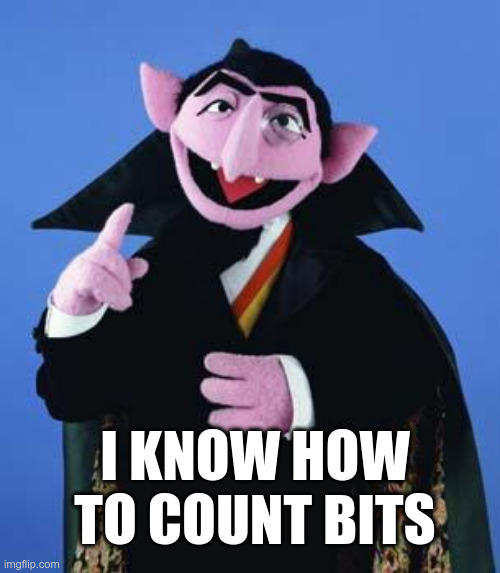

Submit on Mooshak Weekly Problems #03

You are given an array of \(n\) distinct integers. Your task is to sort the array into descending order according to the number of 1's in their binary representation. If two numbers have the same number of 1's, you have to sort them in ascending order of their value.The first input line an integer \(n\): the amount of numbers in the array.
The second line contains \(n\) integers \(x_1, x_2, \ldots, x_n\): the numbers of the array sorted as described above.
A single line containing the numbers in sorted order, separated by single spaces (there should be no space after the last number).
Example input
8 5 2 15 3 9 4 6 7
Example output
15 7 3 5 6 9 2 4
The binary representation of each number in the input is: